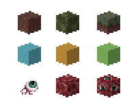
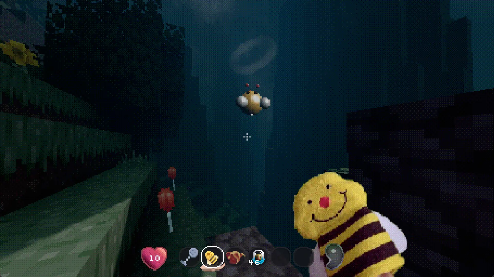
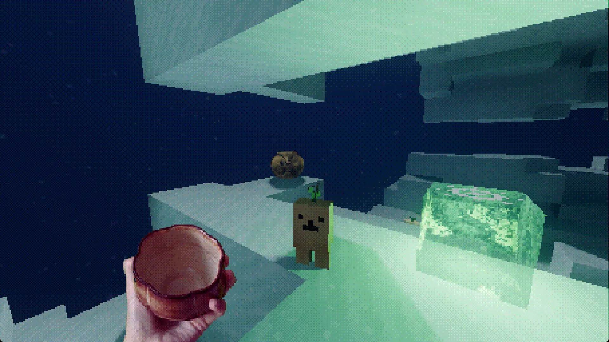
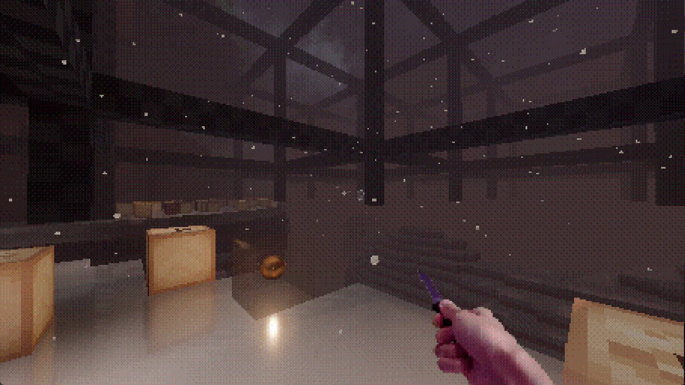
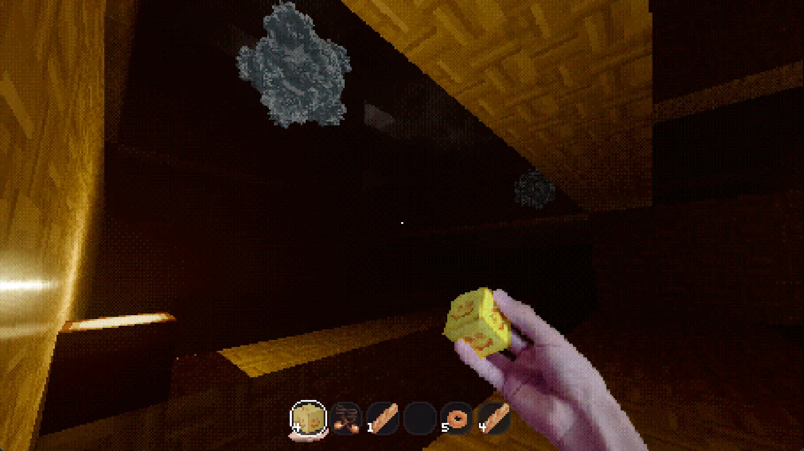
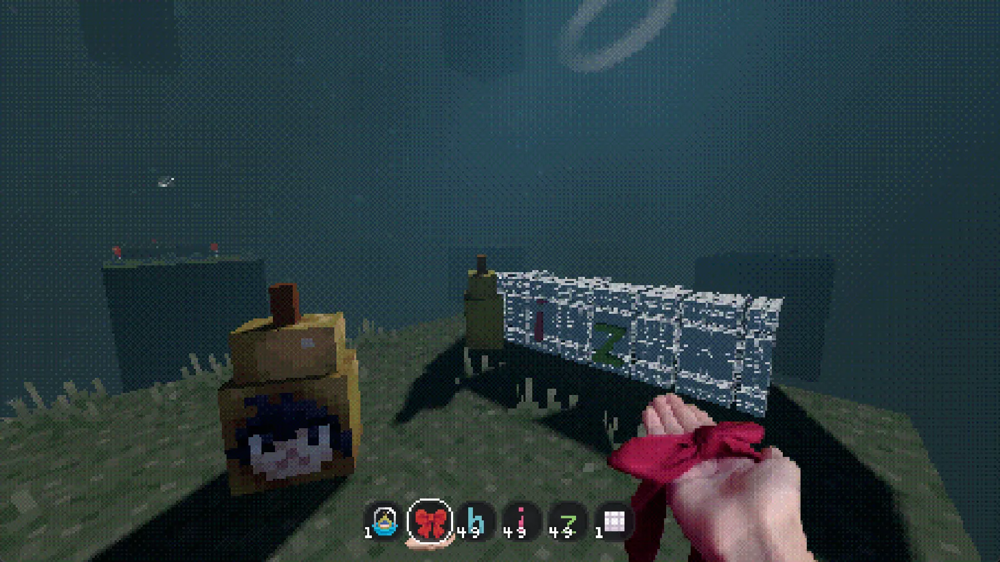
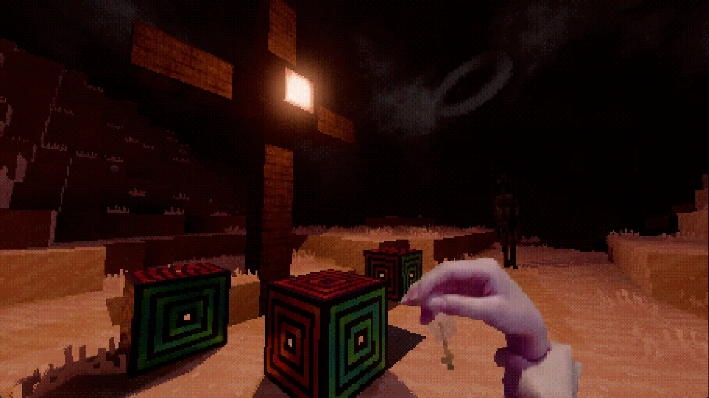

about
-
what is this?
lucid blocks is an entirely new way to experience your subconscious. it is an open world survival sandbox with psychedelic and dream-like worlds to explore. some features include:
- a unique crafting system (apotheosis) that lets you fuse together any set of items without needing to look up recipes.
- an infinite world in all directions, with new environments and structures the higher or deeper you go.
- powerful items like grappling hooks, bee gliders, ball wands, scuba diving gear, and explosives.
- many lovely creatures to meet.
- the firmament to share your creations with other dreamers.

-
where can i play?
lucid blocks is available on Steam. only windows is supported currently, but proton 9.0 works well for Linux and Steam Deck.
faq
-
future updates?
yes, future content updates are planned! these will not be indefinite or regularly scheduled, though.
-
mod support?
yes, see the GameBanana page.
-
multiplayer?
unfortunately, no. however, there is a mod in progress :)
-
translations?
there are no official translations, but there are some fan-created mods:
-
controller support?
yes, with rebinds available in the settings.
-
minimum specs?
lucid blocks does not require a powerful pc, but you need a graphics device that supports Vulkan.
development
-
how was this made?
lucid blocks was created in the Godot game engine using
C++ and GDscript. it started as a simple voxel engine to test Godot's capabilities, but evolved into its own project over the past year. many of the sprites are photos of junk from around my house or a dollar store! the art was made using Aseprite and the music was composed in FL Studio. -
can we work together?
i greatly appreciate anyone that reaches out, but i will have to decline for the sake of keeping the project within a reasonable scope. i would still love to hear your ideas in the discord server, many player suggestions have been added to the game already!
gallery






fanart spotlight
(message me if you'd like your art on here)